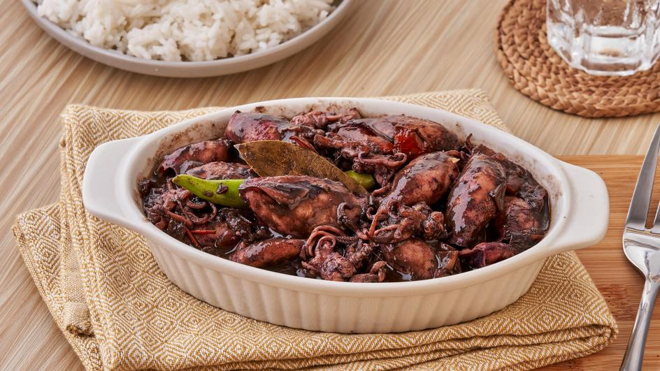

Adobong Pusit Recipe

Ingredients:
- 1 lb squid (pusit), cleaned and cut into rings
- 1/4 cup soy sauce
- 1/4 cup vinegar
- 4 cloves garlic, minced
- 1 onion, chopped
- 2 bay leaves
- 1/2 tsp black pepper
- 1/2 tsp sugar
- 1 tbsp cooking oil
- 1/2 cup water
Instructions:
- Heat oil in a pan over medium heat and sauté garlic and onion until fragrant.
- Add the squid and cook for about 2-3 minutes until it turns opaque.
- Pour in soy sauce, vinegar, water, bay leaves, black pepper, and sugar. Stir to combine.
- Bring to a boil and then lower the heat. Let it simmer for about 5-7 minutes until the squid is tender and the sauce has slightly reduced.
- Adjust seasoning with salt and pepper to taste.
- Serve hot with steamed rice. Enjoy!